Морфометрия мидий из гибридной зоны в бухте Витязь
Генетическая структура выборки
Классическая сидовская морфометрия
RDA по классическим признакам
Проверяем будет ли присутствовать связь между PC по классической маорфометрии и длиной мидии, как это было в случае с галарктическии мидиями

Связь PC1 с размером очевидно есть. Следовательно строим модель RDA, с L, как предиктором, чтобы убрать влияние размеров.
После включения в модель L, остаточные значения PC1 и PC2, не демонстрируют связи с размером.
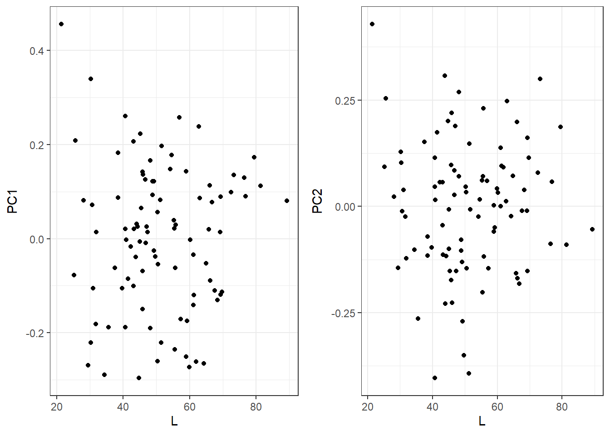
Таким образом, PC1 и PC2 задают морфопространство, лишенное аллометрических зависимостей.
Ординация в остаточных осях PC1 и PC2 после удаления влияния размера
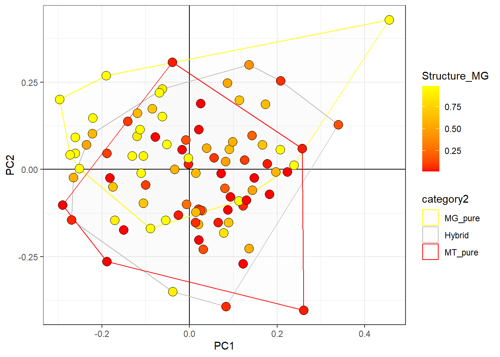


Интерпретация PC1
RDA1 PC1 PC2 Trait
wpr -0.56318189 -0.478809773 -0.033456126 wpr
vpr -0.21531132 -0.268238317 -0.010826874 vpr
dpr -0.19456681 -0.218965431 -0.038085861 dpr
tkn -0.46566066 -0.181531258 0.139635099 tkn
ht -0.03450346 -0.121035897 0.007965671 ht
pal -0.25625184 -0.112248857 -0.093922547 pal
ular -0.16809713 -0.088518180 0.098199716 ular
padv -0.15115551 -0.086182941 -0.015684584 padv
lar -0.24124981 -0.075660298 0.063486012 lar
ppad -0.16456769 -0.054867108 -0.038854848 ppad
padp -0.08250679 -0.045559330 -0.034064220 padp
hp -0.13530700 0.033917906 -0.085957876 hp
pad -0.24475357 -0.031573189 -0.055623607 pad
lig -0.07044176 -0.014070481 0.022475540 lig
lpr -0.28430155 0.007242249 -0.026444701 lpr
wid -0.08587056 -0.006994433 -0.040720766 wid
aam -0.10152790 0.005468996 -0.301827127 aamСамым диагностичным оказывается wpr, он сильнее всего связан с PC1_classic.
Вот так выглядит связь этого признака с PC1.

Наблюдается высокая корреляция PC1 и относительного размера заднего мускула-замыкателя. То есть в качестве диагностического признака можно брать именно этот признак.
Распределение значений PC1 по генетическим категориям

Распределение значений PC2 по генетическим категориям

Связь признаков с морфопространством
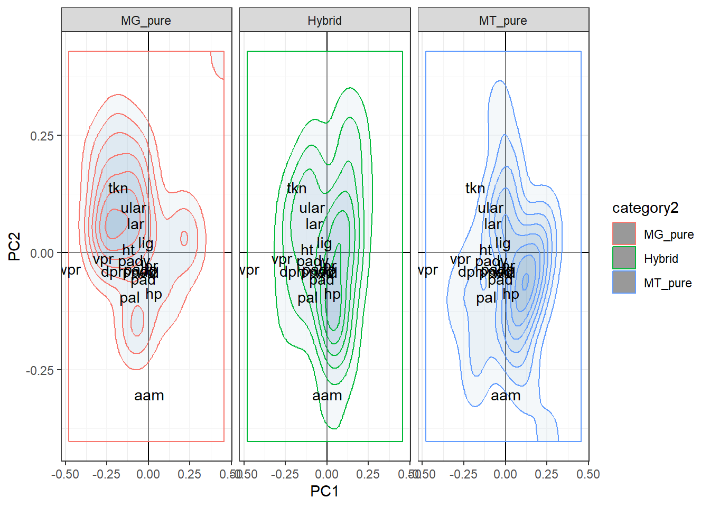
Связь пармтеров морфопространства классической морфометрии с генетической структурой
Family: Beta regression(1.048)
Link function: logit
Formula:
Structure_MG ~ s(PC1) + s(PC2)
Parametric coefficients:
Estimate Std. Error z value Pr(>|z|)
(Intercept) -0.1262 0.1297 -0.973 0.33
Approximate significance of smooth terms:
edf Ref.df Chi.sq p-value
s(PC1) 1 1 5.112 0.02376 *
s(PC2) 1 1 6.648 0.00993 **
---
Signif. codes: 0 '***' 0.001 '**' 0.01 '*' 0.05 '.' 0.1 ' ' 1
R-sq.(adj) = 0.109 Deviance explained = 16.4%
-REML = -31.638 Scale est. = 1 n = 93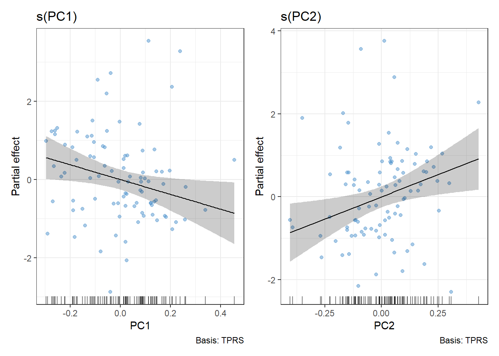
Family: gaussian
Link function: identity
Formula:
PC1 ~ s(Structure_MG)
Parametric coefficients:
Estimate Std. Error t value Pr(>|t|)
(Intercept) 1.474e-17 1.558e-02 0 1
Approximate significance of smooth terms:
edf Ref.df F p-value
s(Structure_MG) 1.477 1.776 3.35 0.0282 *
---
Signif. codes: 0 '***' 0.001 '**' 0.01 '*' 0.05 '.' 0.1 ' ' 1
R-sq.(adj) = 0.0669 Deviance explained = 8.19%
GCV = 0.023196 Scale est. = 0.022578 n = 93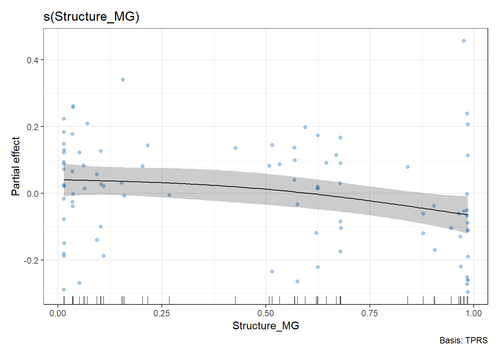
Family: gaussian
Link function: identity
Formula:
PC2 ~ s(Structure_MG)
Parametric coefficients:
Estimate Std. Error t value Pr(>|t|)
(Intercept) 6.714e-17 1.563e-02 0 1
Approximate significance of smooth terms:
edf Ref.df F p-value
s(Structure_MG) 1 1 6.966 0.00978 **
---
Signif. codes: 0 '***' 0.001 '**' 0.01 '*' 0.05 '.' 0.1 ' ' 1
R-sq.(adj) = 0.0609 Deviance explained = 7.11%
GCV = 0.023224 Scale est. = 0.022725 n = 93
Анализ оутлайнов
* Extracting 84 ..txt coordinates...# A tibble: 9 × 9
ID L Z Sex Morphotype Structure_MG Structure_MT category
<chr> <dbl> <dbl> <chr> <chr> <dbl> <dbl> <fct>
1 Vit6 58.9 0.730 M E 0.515 0.485 F1
2 Vit56 40.7 0 F Т 0.037 0.963 MT_pure
3 Vit61 48.9 0 F Т 0.014 0.986 MT_pure
4 Vit72 55.8 0.634 M E 0.679 0.321 F1
5 Vit73 60.2 NA М E 0.984 0.016 MG_pure
6 Vit101 43.1 NA F E 0.986 0.014 MG_pure
7 Vit103 31.7 0 F Т 0.014 0.986 MT_pure
8 Vit105 55.6 0.720 M E 0.515 0.485 F1
9 Vit153 49.2 0 M Т 0.035 0.965 MT_pure
# ℹ 1 more variable: category2 <fct>[1] ID
<0 строк> (или 'row.names' нулевой длины)Морфопространство оутлайнов имеет следующую структуру
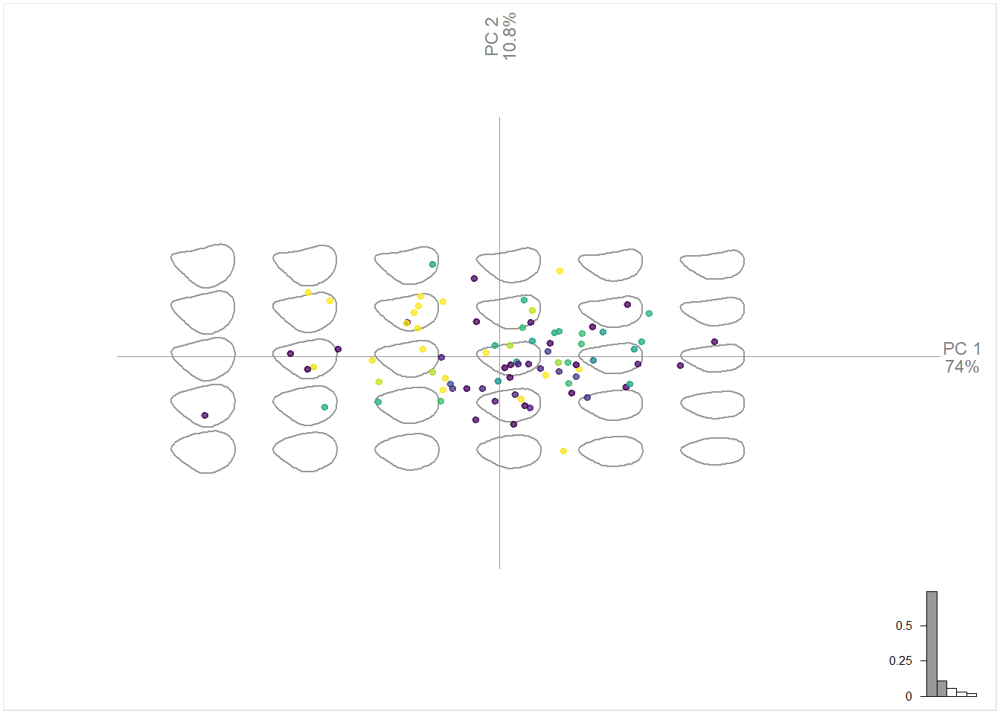
Визуализация распределения точек по категориям в морфопространстве, образованном главными компонентами Фурье.
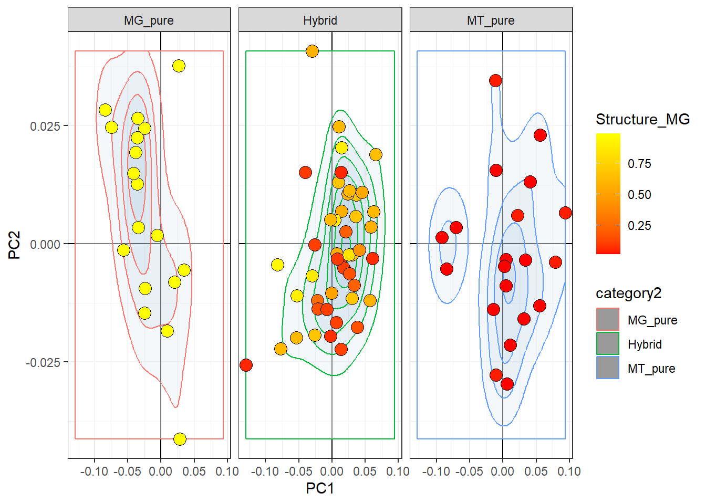
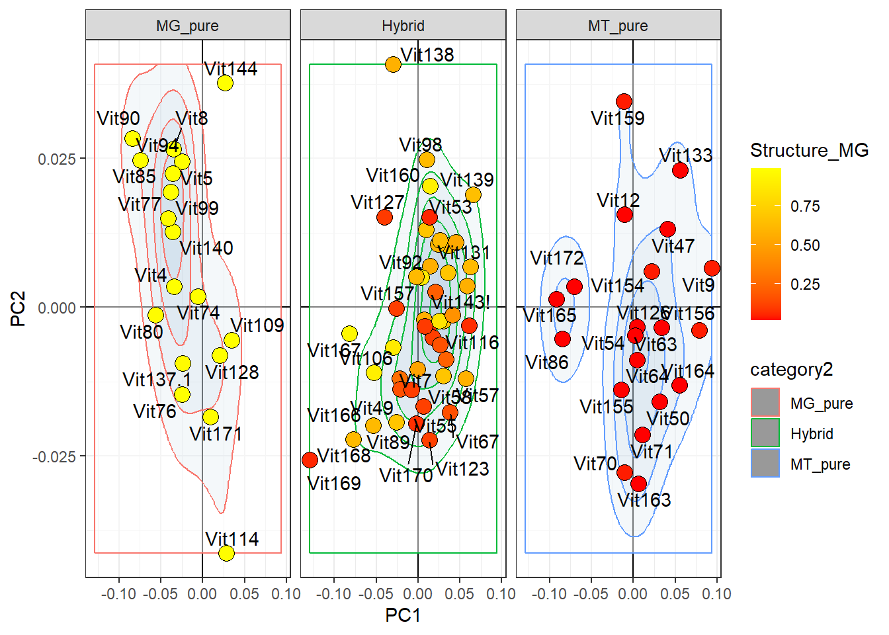
Трактовка PC1_outline
Поскольку PC1_outline явно отражает соотношение высотфы и длины раковины, то в качестве более простого маркера формы раковины можно испоьзовать отношение вычоты и длины. Вот так выглядит связь между отношением PC1_outline и ht/L.
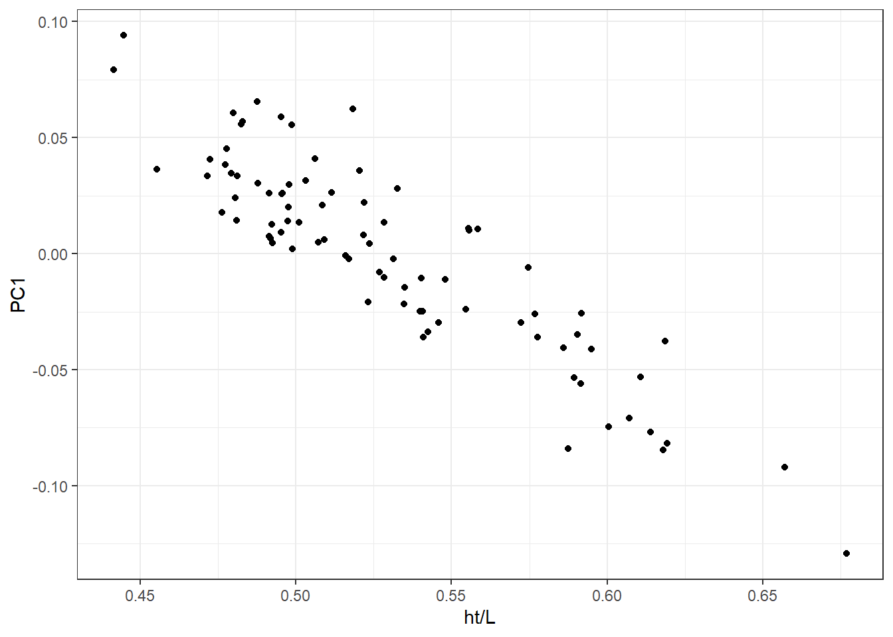
Видна очень хорошая корреляция.
Распределение значений PC1_outline по генетическим категориям

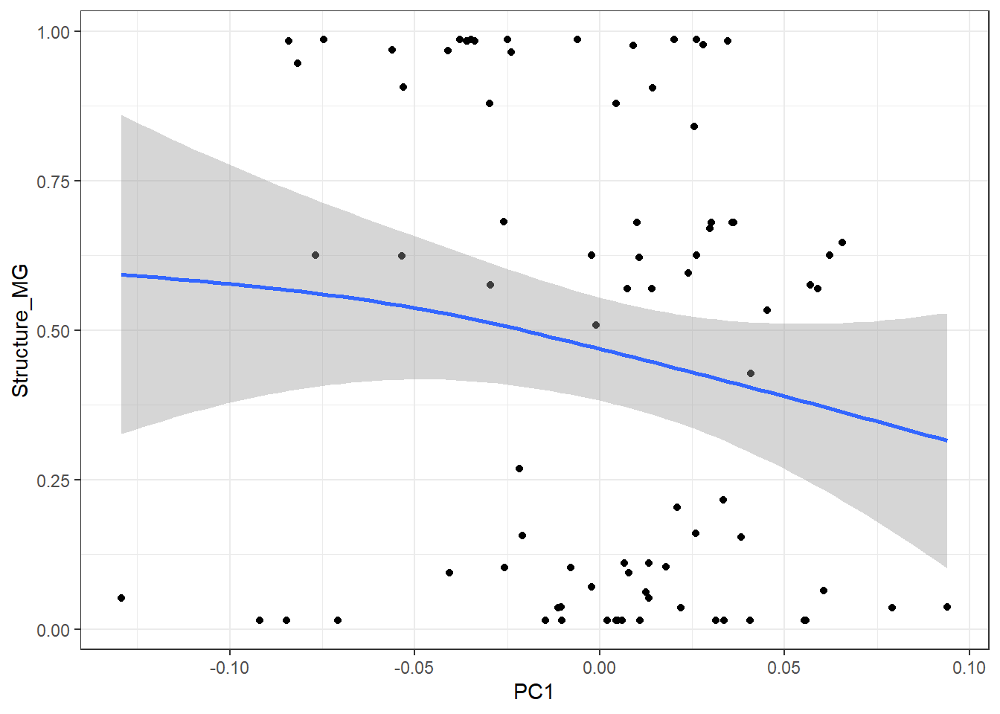
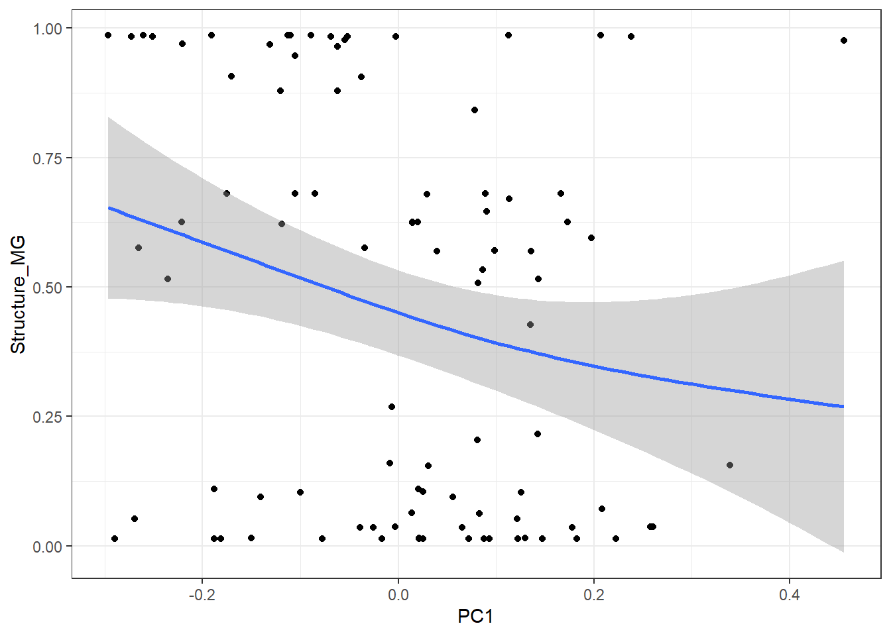
Можно ли судить о генетическом статусе по морфологии раковины.
PC1_outline PC1_classic
1.777946 1.777946
Family: Beta regression(1.024)
Link function: logit
Formula:
Structure_MG ~ s(PC1_outline, bs = "cs") + s(PC1_classic, bs = "cs")
Parametric coefficients:
Estimate Std. Error z value Pr(>|z|)
(Intercept) -0.1102 0.1375 -0.802 0.423
Approximate significance of smooth terms:
edf Ref.df Chi.sq p-value
s(PC1_outline) 2.433e-05 9 0.000 0.72891
s(PC1_classic) 1.213e+00 9 7.377 0.00547 **
---
Signif. codes: 0 '***' 0.001 '**' 0.01 '*' 0.05 '.' 0.1 ' ' 1
R-sq.(adj) = 0.0852 Deviance explained = 13.3%
-REML = -26.562 Scale est. = 1 n = 84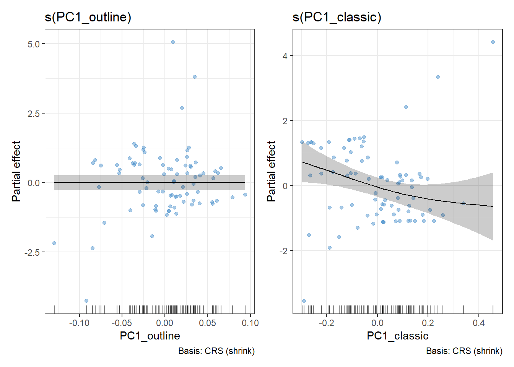
Упс… С формой раковины кажись и нет связи.
Смотрим нет ли связи Structure_MG c более исходными признаками.
df_morph <-
df_morph |>
mutate(HtL = ht/L, WprL = wpr/L)
mod_foo <- lm(Structure_MG ~ HtL + WprL, data = df_morph)
vif(mod_foo) HtL WprL
1.485802 1.485802
Family: Beta regression(1.038)
Link function: logit
Formula:
Structure_MG ~ s(HtL, bs = "cs") + s(WprL, bs = "cs")
Parametric coefficients:
Estimate Std. Error z value Pr(>|z|)
(Intercept) -0.1279 0.1301 -0.983 0.325
Approximate significance of smooth terms:
edf Ref.df Chi.sq p-value
s(HtL) 2.169e-05 9 0.00 0.722099
s(WprL) 1.227e+00 9 10.66 0.000806 ***
---
Signif. codes: 0 '***' 0.001 '**' 0.01 '*' 0.05 '.' 0.1 ' ' 1
R-sq.(adj) = 0.109 Deviance explained = 16%
-REML = -31.761 Scale est. = 1 n = 93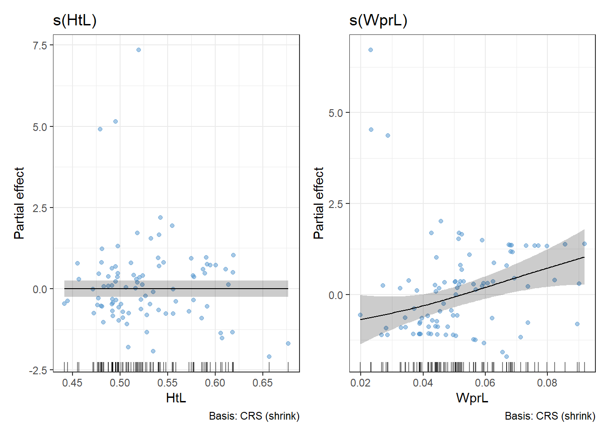
Финальная модель, описывающая связь между Structure_MG и относительным размером заднего мускула замыкателя
Call:
betareg(formula = Structure_MG ~ WprL, data = df_morph)
Quantile residuals:
Min 1Q Median 3Q Max
-1.7144 -0.8083 0.0462 0.7429 2.1863
Coefficients (mean model with logit link):
Estimate Std. Error z value Pr(>|z|)
(Intercept) -1.5655 0.4532 -3.454 0.000552 ***
WprL 27.6851 8.3370 3.321 0.000898 ***
Phi coefficients (precision model with identity link):
Estimate Std. Error z value Pr(>|z|)
(phi) 1.0476 0.1241 8.44 <2e-16 ***
---
Signif. codes: 0 '***' 0.001 '**' 0.01 '*' 0.05 '.' 0.1 ' ' 1
Type of estimator: ML (maximum likelihood)
Log-likelihood: 34.56 on 3 Df
Pseudo R-squared: 0.1285
Number of iterations: 116 (BFGS) + 5 (Fisher scoring) 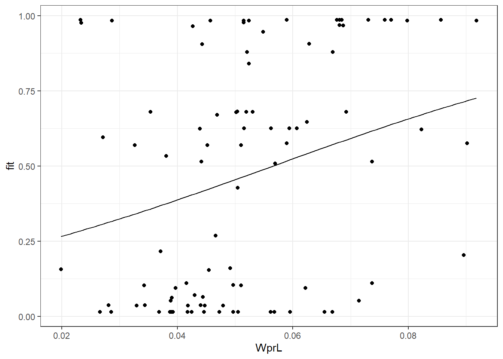